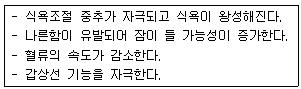
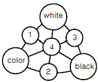
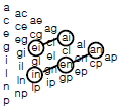
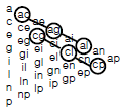
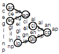
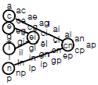

컬러리스트산업기사 (2009-03-01 기출문제)
1과목: 색채심리
1. 동일한 톤의 배색은 어떤 효과를 낼 수 있는가?
- 차분하고 정적이며 통일감의 효과를 낸다.
- 동적이고 화려하며 자극적인 효과를 낸다.
- 안정적이고 온화하며 부드러운 느낌을 준다.
- 통일감과 더불어 변화와 활력있는 느낌을 준다.
(정답률: 알수없음)

2. 비렌(Faber Birren)의 형태와 색의 연관 관계 중 틀린것은?
- 색의 온도감은 색의 속성 중 색상에 주로 영향을 받는다.
- 유채색이 무채색보다 더 진출하는 느낌을 준다.
- 한색계열의 저채도 색이 심리적으로 안정된 느낌을 준다.
- 중량감에 가장 큰 영향을 미치는 것을 채도로, 채도의 차이가 무게감을 좌우한다.
(정답률: 알수없음)
3. 백화점의 현관이나 호텔의 로비와 같이 활동적인 장소의 색상으로 적합한 것은?
- 회색계
- 한색계
- 난색계
- 중성계
(정답률: 알수없음)
4. 서양 문화권에서 색채가 상징하는 역할이 잘못 연결된 것은?
- 왕권 - 노랑
- 생명 - 녹색
- 순결 - 흰색
- 파랑 - 평화
(정답률: 알수없음)
5. 제품 색채계획의 배색에 관한 사항 중 틀린 것은?
- 색채 이미지는 단색보다는 배색시에 더욱 뚜렷하게 전달된다.
- 비콜로 배색, 트리콜로 배색은 강한 대비를 이용한 방법이다.
- 색채계획에서 제품과 시장, 소비자의 특성을 고려한 배색이 중요하다.
- 주조색이 결정되고 배색을 할 대는 디자이너의 감성이 보다 중요하다.
(정답률: 알수없음)
6. 색채의 공감각에 대한 이론을 주장한 사람과 내용이 잘못 연결된 것은?
- 뉴턴 : 색채와 소리 - 빨강(도), 주황(레), 노랑(미), 녹색(파), 파랑(솔), 남색(라), 보라(시)
- 카스텔 : 음계와 색 - C는 청색, D는 녹색, E는 노랑, G는 빨강, A는 보라
- 비렌 : 색채와 모양 - 빨강은 뾰족하고 날카로운 느낌으로 삼각형 연상
- 이텐 : 색채와 모양 - 수직과 수평선의 특성이 있는 모든 모양은 사각형과 관련
(정답률: 알수없음)
7. 민족의 색채기호에 태양광선과 공기의 상태로 인해 영향을 미치는 가장 큰 요인은?
- 지리적 측면
- 사회문화적 측면
- 인구학적 측면
- 심리학적 측면
(정답률: 알수없음)
8. 다음 중 여러 나라의 전통색채에 대한 설명으로 잘못된것은?
- 라틴 아메리카는 저체도의 색채를 선호한다.
- 중국에서는 빨강에 대한 선호도가 크다.
- 이슬람 문화권에서는 녹색을 신성시한다.
- 북유럽의 선호색채는 한색계이다.
(정답률: 알수없음)
9. 색채의 상징에 관한 내용 중 틀린 것은?
- 올림픽 마크의 5색은 5대양주라는 상징성을 가진 컬러 심볼이다.
- 중국에서는 방위의 구분에 색을 사용하였는데, 청색은 동쪽의 색이다.
- 색의 상징으로 등급을 구분하거나나 방위, 분류 등을 하는데 사용하기도 한다.
- 조선시대에도 색으로 등급을 구분하였는데, 정1품에서 정3품까지 청색의 옷을 입었다.
(정답률: 알수없음)
10. 실내의 색채조절에 대한 설명 중 가자 적합하지 않은 것은?
- 천장색의 경우 반사율이 높으면서 눈부시지 않은 무광택 재료로 시공해야 한다.
- 바닥의 경우 반사율이 낮은 색이 좋으며 너무 어둡거나 너무 밝은 것은 좋지 못하다.
- 천장, 바닥, 벽의 순으로 어둡게 하는 것이 안정감이 있다.
- 문의 양쪽 기둥이나 창틀은 벽의 색과 맞도록 고려해야 한다.
(정답률: 알수없음)
11. 색채의 연상과 상징으로 틀린 것은?
- 동일문화의 경우 색채연상은 비슷하다.
- 색채연상은 지역적, 인종적 특색을 만들기도 한다.
- 색채는 고대건축에서는 장식적으로 사용되었으나, 중세에 이르러서 상징적으로 사용되었다
- 색채연상은 건축물 설계시 공감을 얻는 색채적용 방법의 하나이다
(정답률: 알수없음)
12. 잔상에 대한 설명 중 잘못된 것은?
- 잔상이란, 자극으로 색각이 생긴 뒤에 자극을 제거한 후에도 상이 나타나는 것이다.
- 모든 잔상은 자극으로 생긴 색각의 반대되는 상이 나타난다.
- 영화, 수술실의 녹색옷, 셀 에니메이션등은 잔상의 원리 및 효과를 이용한 것이다.
- 계시대비는 잔상의 효과를 이용한 것이다.
(정답률: 알수없음)
13. 색채조절의 효과로 틀린 것은?
- 조명의 효율을 높이기 위해 천장을 밝은 노랑으로 칠한다.
- 공장에서 사고를 줄이기 위해 경고를 나타내는 주황색으로 내부를 칠한다.
- 안전을 기하기 위해 자동차의 바깥부분을 난색계통으로 칠한다.
- 주거공간의 남향에 있는 방에는 한색계열의 색으로 칠한다.
(정답률: 알수없음)
14. 색의 선호에 관한 일반적인 경향을 설명한 것 중 옳은 것은?
- 서구화된 나라일수록 검정색을 좋아하는 경향이 있다.
- 연령이 낮을수록 장파장의 원색계열과 밝은 톤을 선호한다.
- 일반적으로 지식수준이 높고 두뇌를 많이 사용하는 집단에 있는 사람들은 빨간색을 좋아하는 경향이 있다
- 성인이 될수록 장파장의 빨강과 노랑 등을 선호한다.
(정답률: 알수없음)
15. 다음 중 색채의 시간성과 속도감에 대한 설명중 옳은 것은?
- 장파장의 색상은 실제 시간의 흐름보다 시간이 많이 지난 것처럼 느껴진다.
- 속도감은 색상과 채도와의 연관보다 명도와의 연관이 있다.
- 단파장의 색은 실제의 시간이 흐른 것보다 길게 느껴진다.
- 단파장의 색은 속도감이 빠르다.
(정답률: 알수없음)
16. 교회 창문의 스테인글라스 기법에 많이 사용되는 효과는?
- 분리배색
- 연속배색
- 반복배색
- 강조배색
(정답률: 알수없음)
17. 색채와 자연환경과의 관계에 대한 설명으로 틀린 것은?
- 자연형상에서 색의 톤과 이미지를 피부로 느낄 수 있다.
- 지역성을 중시하여 소재와 색채를 장식적인 것으로 한다.
- 그 지역의 기후, 풍투에 맞는 자연 소재가 기본적으로 사용되어야 한다.
- 기온과 일조량의 차이에 따라 톤의 이미지가 변하므로 나라마다 선호하는 색이 다르다.
(정답률: 알수없음)
18. 다음 중 가장 화려함을 느끼게 하는 색은?
- 고명도의 난색
- 고채도의 한색
- 고채도의 난색
- 저명도의 한색
(정답률: 알수없음)
19. 다음에 나타나는 반응은 어떤 색에 대한 신체적 반응인가?

- 노랑
- 녹색
- 주황
- 보라
(정답률: 알수없음)
20. 유채색 중 운동량이 활발하고 생명력이 뛰어나 역삼각형이 연상되는 색채는?
- 빨강
- 노랑
- 파랑
- 검정
(정답률: 알수없음)
2과목: 색채디자인
21. 기하학적 형태나 색채의 장력(長力)을 이용하여 시각적 착각을 다룬 추상미술은?
- 미니멀 아트(Minimal Art)
- 팝 아트(Pop Art)
- 옵 아트(Op Art)
- 포스트 모더니즘(Post Modernism)
(정답률: 알수없음)
22. 색채 시장조사과정에서 동종시장의 타제품과의 상대적 위치를 파악함으로써 전반적인 시장에서의 자사의 위치를 파악하고 새로운 제품기회를 포착할 수 있도록 도와주는 마케팅 기법은?
- 제품 사용성 평가(usability test)
- 스트리트 워칭(street watching)
- 표적 마케팅(market targeting)
- 제품 포지셔닝(product pisitioning)
(정답률: 알수없음)
23. 헤모글로빈, 멜라닌, 카로틴의 양에 의해 결정되는 것은?
- 모발의 색
- 피부의 색
- 입술의 색
- 눈동자의 색
(정답률: 70%)
24. 색채계획시 디자인 대상에 액센트를 주어 신선한 느낌을 주는 색상으로 변화를 주기 위해 사용하는 색은?
- 주조색
- 보조색
- 강조색
- 유행색
(정답률: 알수없음)
25. 유채색의 선명함의 지각이 조명광의 조도레벨에 의존하여 변화하는 색채현상(효과)은?
- 푸르킨예현상
- 색음현상
- 헌트효과
- 브로커슐처효과
(정답률: 알수없음)
26. 이미지, 인상, 감정의 심리 효과를 측정하는 의미미분법 (SD법 : Semantic Differential Method)을 개발한 사람은?
- 퍼스
- 굿맨
- 소쉬르
- 오스굿
(정답률: 알수없음)
27. 디자인 역사에 대한 설명 중 잘못된 것은?
- 구석기 시대에는 대개 주술적 또는 종교적 목적의 디자인이라 아름다움과 실용성을 강조하지 않았다.
- 18세기 영국에서 일어난 산업혁명은 기계혁명이자 생산혁명인 동시에 디자인혁명이었다.
- 중세말 이탈리아에서 도시경제가 번영하게 되자 자연과 인간에 대한 사고방식이 바뀌었는데, 이를 고전문예의 부흥이라는 의미에서 르네상스라 불렀다.
- 중세 유럽문화는 크리스트교를 중심으로 하여 교회와 수도원이 그 중심에 있었고, 인간성에 대한 이해나 개성의 창조력이 뛰어났다.
(정답률: 알수없음)
28. 디자인 교육, 디자인 개발, 디자인 정책도 반드시 생태적 과정, 방법, 수단, 나아가 생태적 평가를 전제하여야 한다고 할 때 가장 필요한 요건은?
- 생화학성
- 경제성
- 질서성
- 친자연성
(정답률: 알수없음)
29. 다음 중 면에 대한 설명으로 바른 것은?
- 소극적인 면은 점의 확대, 선의 이동, 너비의 확대 등에 의해 성립된다.
- 소극적인 면은 종이나 판으로 입체화된 면이 만들어진다.
- 무정형의 면은 도형의 배후에 있어 도형을 올려놓은 큰 면, 즉 도형 대 바탕의 관계로서 무정형은 무형태를 뜻한다.
- 적극적인 면은 공간에 있어서 입체화된 점이나 선에 의해서 도 성립된다
(정답률: 알수없음)
30. 좋은 디자인이 되기 위한 조건이 아닌 것은?
- 기능성
- 심미성
- 창조성
- 윤리성
(정답률: 알수없음)
31. 1907년 결성된 독일공작연맹을 주도적으로 이끈 사람은?
- 헤르만 무테지우스
- 발터 그로피우스
- 헤르만 그레츠
- 오토 에크만
(정답률: 알수없음)
32. 다음 중 문자의 서체와 관련된 디자인 분야는?
- 패키지 디자인
- 에디토리얼 디자인
- 픽토그래프
- 타이포그래피
(정답률: 알수없음)
33. 패션 디자인의 유행색에 관한 설명으로 잘못된 것은?
- 국제유행색협회에서는 2년에 한 번 선정회의를 통해 유행색을 제시한다.
- 일반적으로 R, Y 색계열이 G, BG 색계열 보다 많이 사용된다.
- 계절적인 영향을 받아 봄·여름에는 밝고 연한 색, 가을·겨울에는 어둡고 짙은 색이 주로 사용된다.
- 인테리어 디자인 등 다른 디자인 분야보다 색영역이 다양하며, 유행이 빠르게 변화하는 특징이 있다.
(정답률: 알수없음)
34. 마케팅의 구성요소 중 4P에 해당되지 않는 것은?
- 제품(Preduct)
- 촉진(Promotion)
- 가격(Price)
- 사람(People)
(정답률: 알수없음)
35. 사용자 인터페이스 디자인(User Interface Design)의 궁극적인 목표는?
- 사용자의 사용 편의성 극대화
- 홍보효과의 극대화
- 개발기간의 최소화
- 새로운 수요의 창출
(정답률: 알수없음)
36. 다음 중 멀티미디어 디자인의 특성이라 할 수 없는 것은?
- 사용자가 참여하는 사용자중심(user-centered-design) 으로 변화하고 있다.
- 상호작용에 의한 커뮤니케이션 방법이다.
- 비디오, 오디오, 그래픽, 텍스트가 포함된다.
- 정보가 공급자 중심의 체계로 이루어진다.
(정답률: 알수없음)
37. 제품색채계획단계 중 기획단계에 해당되지 않는 것은?
- 시장조사
- 소비자조사
- 색채분석 및 색채계획서 작성
- 제품 계열별 분류 및 체계화
(정답률: 알수없음)
38. 디자인의 조형요소 중 형태의 분류와 거리가 먼 것은?
- 유동 형태
- 순수 형태
- 자연 형태
- 인위적 형태
(정답률: 알수없음)
39. 다음 중 선의 종류에 따른 연결이 바르지 않은 것은?
- 기하직선형 : 질서가 있는 간결함, 확실, 명료, 강함
- 자유직선형 : 강력, 예민, 남성적, 명쾌, 대담
- 기하곡선형 : 유순, 수리적 질서, 자유, 확실, 고상함
- 자유곡선형 : 명확, 질서, 단정, 여성적
(정답률: 알수없음)
40. 패션 디자인에 대한 설명 중 옳은 것은?
- 의복의 균형은 디자인 요소들의 시각적 무게감에 의해 이루어진다.
- 재질(texture)은 사람들이 가장 먼저 지각하는 디자인요소로서 개인의 기호, 개성, 심리에 반응하는 다양한 감정 효과를 지닌다.
- 패션디자인은 독창성과 개성을 디자인의 기본조건으로 하며 선, 재질, 색채 등을 고려하여 스타일을 디자인 한다.
- 색채이미지는 다양성과 개별성을 지니며 단색 이용시 더욱 뚜렷한 이미지를 전달한다.
(정답률: 알수없음)
3과목: 섹채관리
41. 정확한 색채 측정의 기준에 관한 설명으로 잘못된 것은?
- 필터식색채계는 백색기준물(white reference)의 색좌표를 기준으로 측정한다.
- 분광식색채계는 백색기준물의 분광반사율을 기준으로 한다.
- 백색기준물의 분광반사율은 상대반사율척도로 교정되어 있다.
- 분광색채계의 측정방식이 0/d speculaar included 이면 백색기준물의 교정성적도 0/d speculaar included 방식 의 교정성적을 사용해야 한다.
(정답률: 알수없음)
42. 다음 중 광원의 분광적인 특성과 가장 관계가 없는 것은?
- 연색성(rendition)
- 눈부심(glare)
- 광원색(color)
- 색채순응(chromatic afaptation)
(정답률: 알수없음)
43. 비트맵 영상에 대한 설명으로 잘못된 것은?
- 래스터 영상이라고도 한다.
- 화면의 모든 화소 데이터가 저장되어 있다.
- 화소 간의 관계식이 저장되어 있다.
- 화소들은 비트맵이라고 하는 격자상에 위치한다.
(정답률: 알수없음)
44. 측색의 목적이 바르게 연결된 것은?
- 색의 관리, 색의 커뮤니케이션, 조색
- 색의 관리, 색의 커뮤니케이션, 연색
- 색의 전달, 표색, 조색
- 색의 전달, 연색, 표색
(정답률: 알수없음)
45. 잉크에 대한 설명 중 맞는 것은?
- 시안, 마젠타, 그린, 블랙이 인쇄 잉크가 된다.
- 안료와 전색제를 혼합하여 인쇄 잉크로 사용한다.
- 인쇄 잉크는 인쇄 방식, 재료, 성분, 성질이 달라도 거의 비슷한 결과를 얻는다.
- 특별한 색을 원할 때는 염료를 섞어서 만든다.
(정답률: 알수없음)
46. 염색물의 일광견뢰도란?
- 염색물이 태양광선 아래에서 얼마나 습도에 견디는지를 그래프로 나타낸 것
- 염색물이 자연광 아래에서 얼마나 변색되는가를 나타내는 척도
- 염색물이 세탁에 의하여 얼마나 탈색되는가를 나타내는 정도
- 염색물이 습기와 온도에 의하여 얼마나 변색되는가를 평가하는 척도
(정답률: 알수없음)
47. 다음 중 스펙트럼의 재현, 분광된 색을 섞어 분광광도계에 의한 색 측정의 기본 사고를 제공한 사람은?
- 헬름홀쯔
- 토마스 영
- 뉴턴
- 맥스웰
(정답률: 알수없음)
48. 색료의 투명도(transparency)에 대한 설명으로 옳은 것은?
- 일반적으로 안료가 염료보다 투명도가 높다.
- 같은 조건이라면 입자가 큰 색료가 투명도가 높다.
- 색료와 수지의 굴절률의 차이가 작을수록 투명도가 높다.
- 빛을 많이 산란시키는 색료일수록 투명도가 높다
(정답률: 알수없음)
49. 색료 데이터의 정보에 기술되지 않는 것은?
- 안료 및 염료의 화학적인 구조
- 활용 방법
- C. I. number에 따른 회사별 색료 차
- 제조사의 이름과 판매 업체
(정답률: 알수없음)
50. 미세한 기복을 나타내며 연속으로 변화하는 일련의 사인(sine) 곡선으로 표현되는 전자장비의 처리방식은?
- 디지털(digital)
- 아날로그(analogue)
- 비트(bit)
- 바이트(byte)
(정답률: 알수없음)
51. 다음 중 안료(顔料, pogment)에 대한 설명으로 옳은 것은?
- 물질에 잘 흡착되는 성질을 지닌 광물 색소이다.
- 물이나 대부분의 유기용제에 용해되는 분말상의 착색제이다.
- 가장 대표적인 색소에는 플라보노이드가 있다.
- 동물의 생체활성작용에 의하여 만들어지는 생체 색소이다.
(정답률: 알수없음)
52. 콘크리트의 마무리에 주로 쓰이는 도료는?
- 합성수지 도료
- 오르가노졸 도료
- 플라스틱 도료
- 수성 도료
(정답률: 40%)
53. CCM(Computer Colr Matching system)의 성능에 대하여 바르게 설명한 것은?
- 기준색에 대한 분광반사율 일치가 가능하다.
- 조건등색 현상은 근본적으로 해결하지 못한다.
- 표준광원 C 조명 아래서 색채가 일치하는 것을 기준으로 처방을 산출한다.
- 최소비용의 처방을 계산하기에는 적합하지 않다.
(정답률: 알수없음)
54. 다음 중 사용 단위 기호가 다른 것은?
- 분포온도
- 색온도
- 상관색온도
- 역수색온도
(정답률: 알수없음)
55. 디지털 카메라나 스캐너 등 디지털 입력 장치의 이미지 센서로 사용되고 있으며, 전하결합소자라고 부르기도 하는 것은?
- CCD
- CCM
- CRT
- CIE
(정답률: 알수없음)
56. 연색성을 이용하여 정육점의 조명을 설치하려고 할 때 적합한 것은?
- 백열등
- 적색광원
- 텅스텐 램프
- 온백색 형광등
(정답률: 알수없음)
57. 분광 반사율이 다른 2개의 물체(시료)가 어떤 특정한 빛으로 조명하였을 때 같은 색으로 보이는 것을 무엇이라고 하는가?
- 편색 판정
- 조건 등색
- 시험색
- 보정색
(정답률: 알수없음)
58. 흑체에 대한 설명으로 틀린 것은?
- 흑체란 외부의 에너지를 모두 반사하는 이론적인 물체이다.
- 반사가 전혀 일어나지 않으므로 이를 상징하여 흑체라고 한다.
- 흑체가 에너지를 흡수하면 물체는 뜨거워진다.
- 흑체는 비교적 저온에서는 붉은 색을 띤다.
(정답률: 알수없음)
59. 다음 중 디지털 영상장치의 생산업체들이 모여 디지털 영상의 호환성을 확보하기 위하여 표준을 정하는 국제적인 단체는?
- CIE(국제조명위원회)
- ISO(국제표준기구)
- ICC(국제색채연맹)
- AIC(국제색채학회)
(정답률: 알수없음)
60. 육안검색시 색에 가장 큰 영향을 주는 것은?
- 관측 시야각
- 광원의 세기
- 광원의 연색지수
- 조명의 방식
(정답률: 알수없음)
4과목: 색채지각의이해
61. 동시대비에 관한 설명 중 틀린 것은?
- 색차가 클수록 대비 현상은 강해진다.
- 자극과 자극 사이의 거리가 멀어질수록 대비 현상은 약해진다.
- 색자극의 크기가 작을수록 대비의 효과가 작아진다.
- 서로 인저하여 동시대비가 일어나는 경우 인접한 부분이 특별히 강하게 대비효과가 나타나게 된다
(정답률: 알수없음)
62. 진주조개나 전복껍질 또는 비누 물거품 등의 표면에 무지개 현상을 일으키는 것은 빛의 어떤 현상으로 인해 발생하는 것인가?
- 빛의 산란
- 빛의 간섭
- 빛의 반사
- 빛의 편광
(정답률: 알수없음)
63. 무료하게 사람을 오래 기다려야 하는 병원이나 역의 대합실에는 어떤 색 계열을 사용하면 지루함을 줄일 수 있을까?
- 빨강계열
- 청색계열
- 회색계열
- 흰색계열
(정답률: 알수없음)
64. 진출색에 관한 설명 중 잘못된 것은?
- 노란색이 파란색보다 진출해 보인다.
- 분홍색이 자주색보다 진출해 보인다.
- 밝은 노란색이 어두운 노란색보다 진출해 보인다.
- 어두운 회색이 초록보다 진출해 보인다.
(정답률: 알수없음)
65. 눈의 조절작용에 관한 설명으로 틀린 것은?
- 물체의 거리에 따라 수정체의 두께가 조절된다.
- 먼 곳을 볼 때는 수정체가 편평하게 조절된다.
- 수정체의 형태가 편평해지면 굴절이 더 작게 일어난다.
- 먼 곳을 볼 때는 수정체가 볼록하게 조절된다
(정답률: 알수없음)
66. 눈의 시세포에 대한 설명 중 올바른 것은?
- 색채시각과 관련된 광수용기는 간상체이다.
- 인간의 눈에는 약 600만개의 추상체와 1억2천만개의 간상체가 있다.
- 추상체는 간상체에 비하여 해상도가 떨어지지마 빛에 더 민감하다.
- 눈의 망막 중 중심와에는 간상체만 존재한다.
(정답률: 알수없음)
67. 다음 중 형광현상을 잘 설명한 것은?
- 에너지 보전 법칙으로는 설명되지 않는 현상이다.
- 긴 파장의 빛이 들어가서 그보다 짧은 파장의 빛이 나오는 현상이다.
- 형광염료의 발전으로 색료의 채도범위가 증가하게 되었다.
- 형광현상은 어두운 곳에서만 일어난다.
(정답률: 알수없음)
68. 색상 대비가 가장 잘 일어나는 경우는?
- 1차색끼리의 대비
- 2차색끼리의 대비
- 3차색끼리의 대비
- 2차색과 3차색의 대비
(정답률: 알수없음)
69. 색료혼합에 있어서 보색관계의 두 색에 관한 이론적 설명중 가장 올바른 것은?
- 혼합하였을 때, 유채색이 되는 두 색
- 혼합하였을 때, 무채색이 되는 두 색
- 혼합하였을 때, 청(淸)색이 되는 두 색
- 혼합하였을 때, 명(明)색이 되는 두 색
(정답률: 알수없음)
70. 다음 중 동일한 크기의 보색끼리 대비를 이루어 발생한 눈부심 효과를 줄이기 위한 방법으로 가장 거리가 먼 것은?
- 두 색 사이에 무채색을 넣는다.
- 두 색의 경계를 애매하게 만든다.
- 두 색 사이에 테두리를 두른다.
- 두 색 중 한 색의 크기를 줄인다
(정답률: 알수없음)
71. 다음 중 영·헬름홀쯔의 색지각설에 대한 설명으로 틀린것은?
- 빨강과 파랑의 시세포가 동시에 흥분하면 마젠타의 색각이 지각된다.
- 녹색과 빨강의 시세포가 동시에 흥분하면 노랑의 색각이 지각된다.
- 우리 눈의 망막 조직에는 빨강, 녹색, 파랑의 시세포가 있어 색지각을 할 수 있다.
- 색채의 흥분이 크면 어둡게, 색채의 흥분이 작으면 밝게, 색채의 흥분이 없어지면 흰색으로 지각된다
(정답률: 알수없음)
72. 다음 중 색온도의 단위는?
- 나노미터(nm)
- 켈빈(K)
- 럭스(lx)
- 마이크로미터(㎛)
(정답률: 알수없음)
73. 색을 직접 섞지 않고 색점을 섞어 배열함으로써 전체 색조를 변화시키는 효과를 무엇이라고 하는가?
- 비렌효과
- 헬름홀쯔 효과
- 푸르킨예 효과
- 베졸드 효과
(정답률: 알수없음)
74. 색상대비에 대한 설명으로 틀린 것은?
- 색상이 다른 두 색이 서로 대조가 되어 두 색간의 색상차가 크게 보이는 현상을 말한다.
- 색상환에서 거리가 가까운 색들 사이에서 일어나는 대비현상이다.
- 두 색을 서로 대비시키면 반대방향으로 색상차가 크게 벌어져 보인다.
- 색상이 없는 무채색에서도 같은 현상을 느낄 수 있다.
(정답률: 알수없음)
75. 다음 중 색의 동화효과를 바르게 설명한 것은?
- 일정한 자극이 사라진 후에도 지속적으로 자극을 느끼는 현상이다.
- 대비효과의 일종으로서 음성적 잔상으로 지각된다.
- 색의 경연감에 영향을 주는 지각 효과이다.
- 색의 전파효과 또는 혼색효과라고 한다.
(정답률: 알수없음)
76. 빨간색에 대한 잔상이 녹색이고, 녹색에 대한 잔상은 빨간색이며 노란색과 파란색 사이에도 상응하는 결과가 관찰된다는 현상학적 사실에 근거하여 색채지각의 이론을 제안한 사람은?
- 헤링
- 헬름홀쯔
- 드발로
- 먼셀
(정답률: 알수없음)
77. 인간은 자신이 대낮에 지각한 색으로 건물의 색을 지각하려는 경향이 있다. 이는 무엇과 관련이 있는가?
- 연속 대비
- 색 항상성
- 잔상 효과
- 색 상징주의
(정답률: 알수없음)
78. 다음 중 색채지각반은효과에서 명시성(legibility)을 가장 크게 미치는 속성은?
- 채도차이
- 명도차이
- 질감차이
- 상상차이
(정답률: 알수없음)
79. 다음 중 가법혼색과 감법혼색의 설명으로 틀린 것은?
- 가법혼색은 네거티브필름 제조, 젤라틴 필터를 이용한 빛의 예술 등레 활용된다.
- 색필터는 겹치면 겹칠수록 빛의 양은 가해지고, 명도가 높아지기 때문에 가법혼색이라 부른다.
- 감법혼색의 삼원색은 Yellow, Magenta, Cyan 이다.
- 감법혼색은 컬러 슬라이드, 컬러영화필름, 색채사진 등에 이용되어 색을 재현시키고 있다.
(정답률: 알수없음)
80. 연변대비를 설명한 것 중 잘못된 것은?
- 명도가 낮은 색과 접하고 있는 부분은 밝게 보인다.
- 명도가 높은 색과 접하고 있는 부분은 어둡게 보인다.
- 빨강과 자주의 경계 부근에서 빨강은 더욱 탁하게 보이고 자주는 더욱 선명하게 보인다.
- 연변대비는 색상과 채도에서도 나타난다.
(정답률: 알수없음)
5과목: 색채체계의이해
81. CIELAB(L*a*b*) 색공간의 표기 설명으로 틀린 것은?
- L*는 명도를 나타낸다.
- +a*는 초록색 방향이다.
- +b*는 노란색 방향이다.
- a*와 b*는 색도좌표들을 나타낸다.
(정답률: 알수없음)
82. 산업자원부 기술표준원에서 2003년 12월 개정된 ksa0011 물체색의 색이름 중 기존의 10가지 기본색이름에서 추가된 유채색의 기본색이름으로 짝지어진 것은?
- 초록, 분홍
- 분홍, 갈색
- 하양, 갈색
- 하양, 검정
(정답률: 알수없음)
83. NCS표색계의 표기방법으로 맞는 것은?
- R40B -5030
- 40B50/30
- 60R50/30
- S5030 - R40B
(정답률: 알수없음)
84. 한국산업규격(KS) 색이름에 쓰이는 수식어가 아닌 것은?
- 밝은, 어두운, 진한
- 빨간, 노란, 파란
- 초록빛, 분홍빛, 자주빛
- 흐린, 탁한, 맑은
(정답률: 알수없음)
85. 우리 나라 전통색명이 아닌 것은?
- 담황색
- 옥색
- 마룬색
- 선홍색
(정답률: 알수없음)
86. 오스트발트 색입체에 대한 설명 중 맞는 것은?
- 상하 좌우 대칭의 복원추체이다.
- 중심축에 채도가 있다.
- 꼭지점에 백색, 순색, 회색을 배열한다.
- 새로운 색이 발견되면 변형될 수 있다.
(정답률: 알수없음)
87. 빛의 표준 3원색을 선택하여 그 조합에 의해 색을 나타내려는 것으로서 1931년 국제조명위원회가 정식으로 정한 표색계는?
- 먼셀표색계
- XYZ 표색계
- 오스트발트 표색계
- NCS 표색계
(정답률: 알수없음)
88. 관용색명에 관한 설명 중 올바른 것은?
- 옛날부터 전해 내려온 것으로 습관상으로 사용하는 색 하나하나의 고유색명을 말한다.
- 색의 표시방법이 매우 정량적이고 정확성을 가진 색명 체계이다.
- 색의 삼속성인 색상, 명도, 채도를 표시하는 수식어를 특별히 정하여 표시하는 색명이다.
- 일반적으로 계통 색명(係統色名)이라고도 한다.
(정답률: 알수없음)
89. 다음 그림에서 비렌의 색삼각형을 구성하는 요소들의 위치와 조합이 올바른 것은?

- ① SHADE
- ② TINT
- ③ BLACK
- ④ TONE
(정답률: 알수없음)
90. 먼셀기호 7. 5BG 5/8에 대한 설명으로 맞는 것은?
- 명도는 7. 5이다.
- 명도는 BG이다.
- 명도는 5이다.
- 명도는 8이다
(정답률: 알수없음)
91. 오스트발트 표색계의 표기법으로 맞는 것은?
- 5R3/4
- S3040-R
- 2pa
- 36ca
(정답률: 알수없음)
92. P. C. C. S. (Practical Color Coordinate Sstem) 표색계의 구성 특징에 대한 설명으로 가장 올바른 것은?
- 명도기호는 먼셀표색계의 명도에 맞추어 백색은 9. 5, 흑색은 1. 5로 하여 총 10단계로 구성
- 물체색을 대상으로 함으로써 색료의 3원색을 기본으로 하여 색상환을 구성
- 채도는 9단계가 되도록 하여 모든 색상의 최고 채도를 9s로 표시
- R, Y, G, B, P의 5색상과 각 색의 심리보색을 대응시켜 10색상을 기본색상으로 구성
(정답률: 알수없음)
93. 한국인의 생활색채에 관한 설명으로 틀린 것은?
- 자연과 더불어 담백한 색조가 지배적이었다.
- 단청 건축물은 부의 상징이었으며, 살림집은 신분을 상징하는 색으로 채색되었다.
- 흑, 백, 적색은 재앙을 막아주는 주술적인 의미로 색동옷 등에 상징적으로 쓰였다.
- 비색이라 불리는 청자의 색은 상징적인 색이며, 실제로는 단색으로 표현할 수 없는 회색에 가까운 자연의 색이다.
(정답률: 알수없음)
94. 색체계에 대한 설명으로 맞는 것은?
- 색을 정량적으로 나타내는 색채 체계를 표색계라 한다.
- 표색계의 분류에는 한색계와 난색계가 있다.
- 표색계로 색을 정확하게 표시할 수는 없다.
- 색채표준은 전세계적으로 동일하다
(정답률: 알수없음)
95. 먼셀 색입체를 수평으로 절단할 때 중심축의 회색 주위에 나타나는 모양은?
- 같은 명도의 여러 색상
- 같은 채도의 여러 색상
- 같은 색상의 채도 변화
- 같은 색상의 같은 채도
(정답률: 알수없음)
96. 먼셀 표색계에 대한 설명으로 틀린 것은?
- 먼셀 휴(Munsell Hue)의 기본 5색상은 빨강(R), 노랑(Y), 녹색(G), 파랑(B), 보라(P) 이다.
- 5R보다 7. 5R이 노란색을 많이 띤 빨간색이며, 2. 5R이 보라색을 많이 띤 빨간색이다.
- 명도의 단계는 1에서 9까지로 1은 이상적인 흰색을, 9는 이상적인 검정색을 의미하다.
- 채도는 무채색 축을 0으로 하고 수평방향으로 번호가 증가하며, 번호가 커질수록 채도가 높아진다
(정답률: 알수없음)
97. PCCS의 톤 분류가 아닌 것은?
- strong
- dark
- tint
- grayish
(정답률: 알수없음)
98. 먼셀 색채조화론의 원리에 대한 설명으로 잘못된 것은?
- 중간 채도의 반대색 배색은 같은 넓이로 배합하면 조화롭다.
- 명도는 같지만 채도가 다른 반대색의 경우에는 약한 채도는 넓게 하고 강한 채도는 작은 면적을 준다.
- 짙은 색이나 약한 채도는 밝은 명도나 강한 채도의 것보다 그 넓이를 작게 한다.
- 채도가 같고 명도가 다른 반대색끼리는 회색척도에 관하여 정연한 간격으로 했을 때 조화된다
(정답률: 알수없음)
99. 다음 중 현색계의 장점은?
- 색채측정 환경을 임의로 설정하여 측정할 수 있다.
- 조색, 오차검사 등에 적합한 규정을 적용할 수 있다.
- 색편을 등간격으로 뽑아내어 축소된 색표집으로 사용할 수 있다.
- 색표계간에 정확한 변환이 가능하다.
(정답률: 알수없음)
100. 다음 중 오스트발트 색채조화론이 유채색과 무채색의 조화에 해당하는 등색상 삼각형은?




(정답률: 46%)